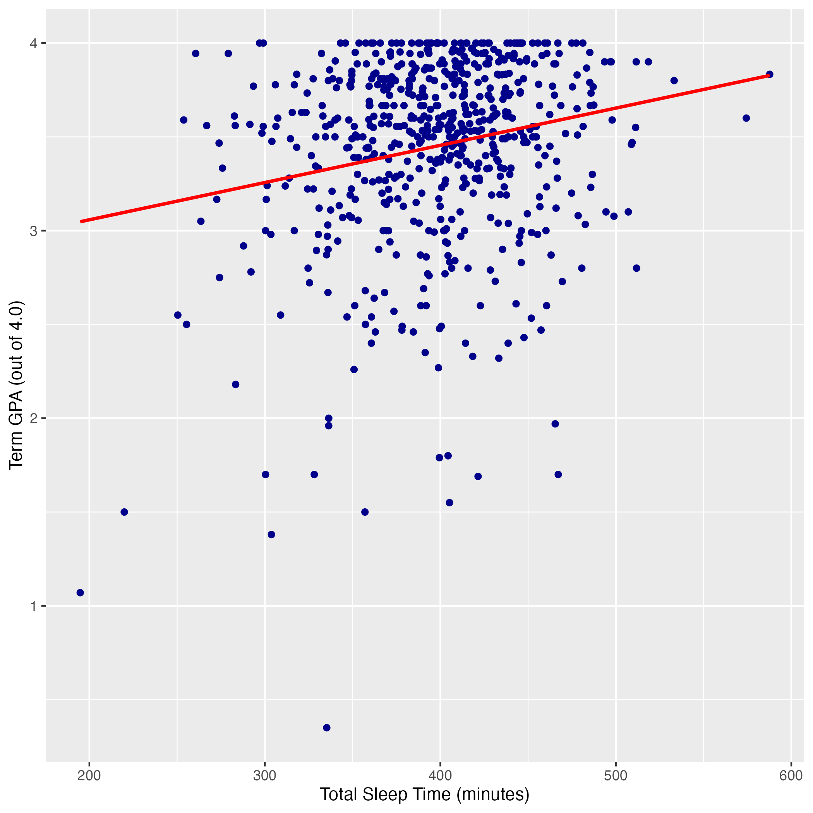
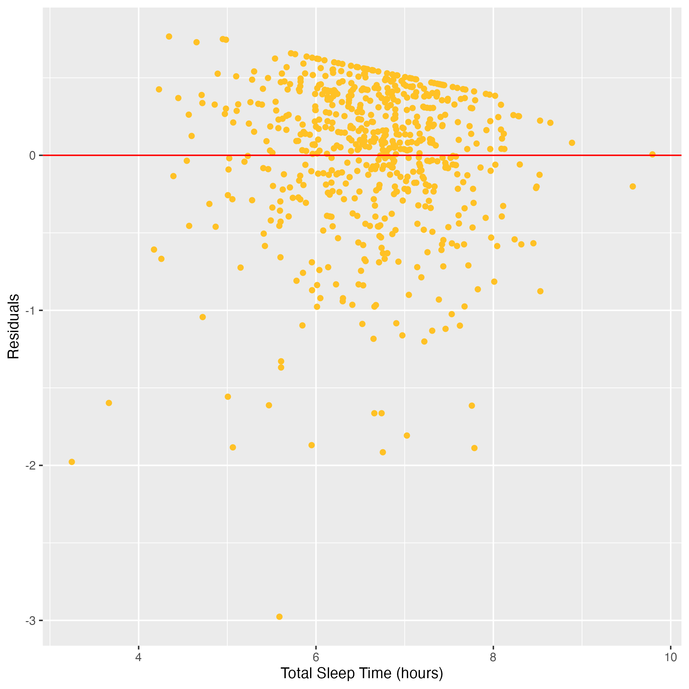

Exploring the Relationship Between Sleep Duration and College GPA
Exploring the Relationship Between Sleep Duration and College GPA
A statistical analysis examining whether college students’ average sleep duration is associated with semester GPA.
This project examines whether college students who sleep less tend to have lower GPAs. The analysis uses data from students at Carnegie Mellon University and two other universities, where students wore sleep trackers for one month during the spring semester.

A simple linear regression in R was used to evaluate the association between sleep duration and academic performance. Based on exploratory data analysis, the model focused on the relationship between students’ average nightly sleep time and semester GPA.
- Simple Linear Regression: Used to model the association between TotalSleepTime and term_gpa.
- Variable Transformation: Converted TotalSleepTime from minutes to hours by dividing by 60, allowing the slope estimate to be interpreted as the average GPA difference associated with one additional hour of sleep.
- Model Evaluation: The regression plot suggested a plausibly linear relationship, though visible variation around the fitted line indicated that the model may not fully capture all patterns in the data.

The fitted model found a positive slope estimate for sleep duration. The p-value was very small, providing evidence that the slope coefficient is not equal to zero.
Estimated GPA increase associated with one additional hour of sleep.
P-value for the sleep duration coefficient, indicating statistical significance.
Students who slept more tended to have higher semester GPAs on average, suggesting a positive relationship between sleep duration and academic performance.
Each additional hour of sleep was associated with a 0.1191-point increase in GPA. Two fewer hours of sleep corresponded to an estimated 0.2382-point decrease in GPA.
The model shows an association between sleep and GPA, but it does not prove that sleeping more directly causes a higher GPA.